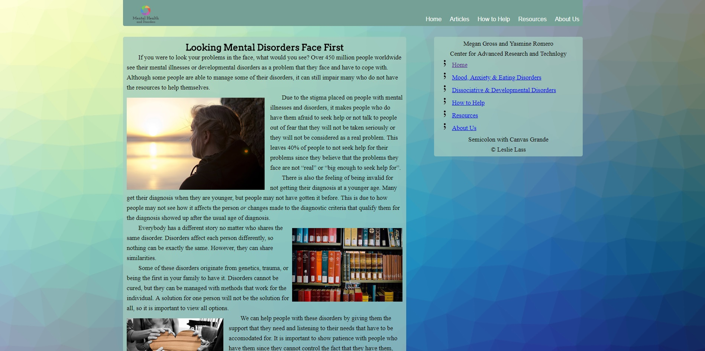
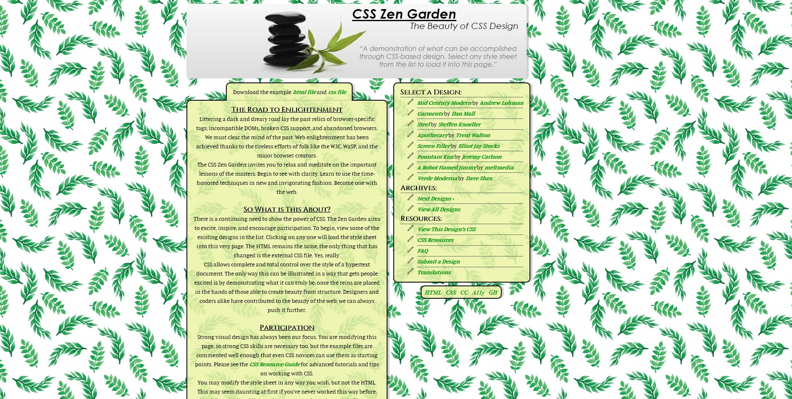
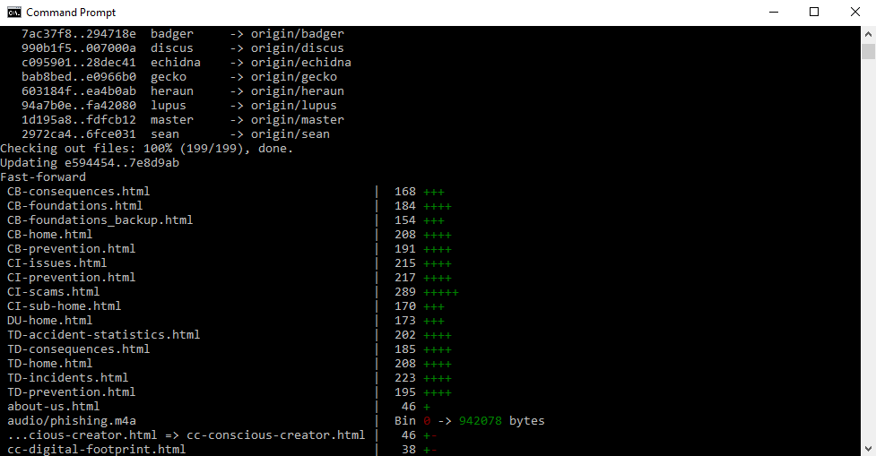

Web Projects
Technology Skill: Hypertext Markup Language (HTML) and Cascading Style Sheets (CSS)
Project: Awareness Website
This project’s goal was to make a website about a cause and inform visitors about the cause, so my partner and I chose mental health and disorders. This project required the use of HTML, CSS, media queries, and a parallax layout. What I did was work entirely on CSS and work with my partner on formatting the HTML for half of the pages on the website.
My partner and I worked together to create a wireframe and mockups. Next, we put everything into HTML and then I began working on the website’s CSS while my partner worked on proofreading and adding more information wherever it was necessary. We wrote the code in the program Brackets, used the programming languages HTML and CSS, and made the mockups with Photoshop. Our biggest challenge was finding a way to have a functional drop-down navigation for smaller screen displays and learned that having clean and organized code makes it easier to find and fix mistakes. We succeeded in effectively laying out the information on the website in a visually appealing way.
The habits of mind I employed for this project were metacognition so I could remain sensitive about how the information would be perceived and thinking interdependently since my partner and I had to effectively work together to achieve our end product. I can employ these skills in the future by working with a variety of teams and collaborating to generate new ideas.
Technology Skills: Photoshop
Project: CSS Zen Garden
The project was to give CSS designs to a website that was only comprised of HTML. We were required to give the plain HTML site a new CSS design on our own. To help give the website some more visual effects, I made a header image in Photoshop with some text from the website to give a nice introductory image. I had to find a photo that fit the website’s visual aesthetics, and then find a way to position the text around the rocks and leaves in the photo. My biggest struggle was finding a photo that fit the website, but found out that finding photos that fit the website’s theme makes it easier to find what is needed for visuals. A success was having an easy time putting the text in visually appealing placements.
The habit of mind that I used was innovating since I had to find a creative way to display the information that I wanted on the image. I can employ this skill in the future by continually finding more ways to exercise my Photoshop abilities.
Technology Skills: Git
Project: Digital Ethics / Cyberbullying
The project was focused on building a website to educate users on the importance of digital ethics and cyberbullying. A big requirement for this project was to use the program Git to store our files as my entire class worked as an entire team for the website’s composition. In order to get to the finished product, I had to be able to effectively use Git’s interface in order to push files onto the repository on GitHub as well as pull new data onto our computers.
The habit of mind that I employed for this project was interdependency, because without it, there would be a lot of conflicts when merging the files together into the repository along with the rest of my classmates. I can employ these skills in the future by participating in projects that require the use of Git so we can work on the same files at once from different locations.